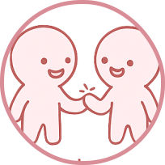
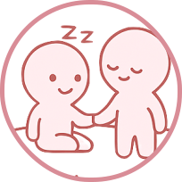

A healthy partner expresses thoughts and feelings clearly and listens with understanding. Honest conversations help prevent misunderstandings and build trust. Good communication strengthens emotional connection over time.

Respect for boundaries
Respecting boundaries shows maturity and consideration. A green flag partner understands personal limits and does not pressure others to go beyond their comfort zone. This creates a safe and supportive environment.

Trustworthiness
Being reliable and honest builds a strong foundation for any relationship. A trustworthy person keeps promises and avoids actions that create doubt. Trust allows both individuals to feel secure and valued.
Emotional Maturity
An emotionally mature person handles conflicts calmly and avoids unnecessary drama. They take time to reflect before reacting. This helps maintain stability and mutual understanding.
Accountability
Admitting mistakes and apologizing sincerely shows growth and responsibility. Instead of blaming others, a green flag partner works toward solutions. Accountability strengthens respect between both individuals.
Consistent Effort
Healthy relationships require steady care and attention from both sides. A green flag partner shows effort regularly, not just when convenient. Consistency makes the relationship feel secure and dependable.
Empathy
Empathy allows someone to understand and validate their partner’s feelings. A supportive partner listens and responds with compassion. This deepens emotional intimacy and trust.
Encouragement of Independence
A green flag partner supports personal goals, friendships, and individuality. They do not feel threatened by independence. Instead, they celebrate growth and self-improvement.
Healthy Conflict Resolution
Disagreements are handled with respect and patience. Rather than avoiding issues or escalating arguments, a green flag partner seeks compromise. This keeps conflicts productive instead of destructive.